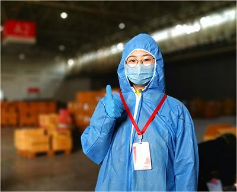

默认首页
|
加入收藏
首页
山川河貌
人民大会堂
玉龙雪山
拉萨
桂林
传世国宝
熊猫
朱鹮
金丝猴
华南虎
藏羚羊
先进典例
钟南山
张定宇
聂海胜
陈薇
王忠心
党员入口
组织工作
思想理论
会议报告
青年先锋队
抗疫志愿者
先进工作者
劳动模范
青年先锋队
全国劳动模范
先进工作者
抗疫志愿者
优秀共青团员
各级优秀志愿者
青年先锋队
Young Pioneers

王一苇：在“疫”线践行入党誓言
疫情期间，华中科技大学第21届研究生支教团新疆分队队长 王一苇主动报名一线志愿者，先后在汉阳国际博览中心、武汉雷神山医院、湖北省人民医院、武汉市第九医院、 武汉市第七医院、华中科技大学校医院及社区进行志愿服务，累计参与搬运10000余箱物件、70000斤果蔬和15吨消毒水， 为疫情初期的武汉打通了医疗物资的生命线。
谢小玉：青春的脚步奔跑在前线
新冠肺炎疫情在武汉爆发后，中国矿业大学（北京）的大二学生谢小玉 第一时间主动到东湖新城社区担任社区志愿者，成为社区内唯一的大学生志愿者和“00后”志愿者。 她与另一名志愿者一起，负责对接东湖新城社区第30栋200多户居民的生活需求，买菜、买药、跑腿儿、取快递， 直接服务700余人，用青春的脚步奔跑在疫情前线。
徐卓立：雷神山上的大学生“基建狂魔”
在这次抗击新冠肺炎疫情的斗争中， 长安大学建筑工程学院土木类专业大一学生徐卓立不惧危险和恐慌，毅然决然随父亲奔赴抗“疫”一线， 积极投身雷神山医院的建设中，连续六天连夜作战，顺利完成雷神山医院两百余套淋浴间的设备安装工作， 为医患人员的正常工作和生活提供了基本保障。
刘晴：“95后”志愿者接力守护国门
北京新国展集散点作为首都机场入境北京旅客的转运集散地， 成为北京市外防输入的最前线。北京科技大学文法学院社会工作专业研一学生刘晴第一时间主动请缨， 奔赴新国展集散点协助防疫工作。核对信息、翻译引导、接受咨询……面对入境旅客不同的需求， 她耐心细致、不辞辛苦。作为一名曾经参军入伍的大学生，她对“使命”和“责任”有着更深刻的理解。
吴斯琪：用语言的力量筑牢防线
“每次接完深夜热线电话、完成远程电话口译并解决外宾问题， 我都由衷感到高兴，因为可以在特殊时期帮助到有需要的人。”吴斯琪是上海外国语大学英语学院2017级硕士研究生， 主修翻译研究（口译方向）。疫情期间，她坚持在上海12345热线担任英语夜班志愿者。